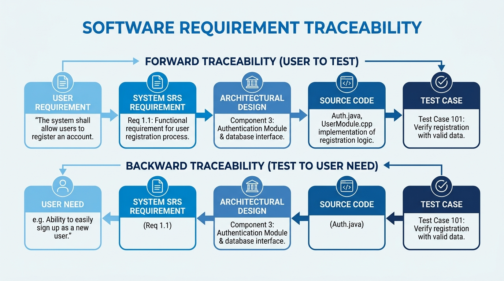
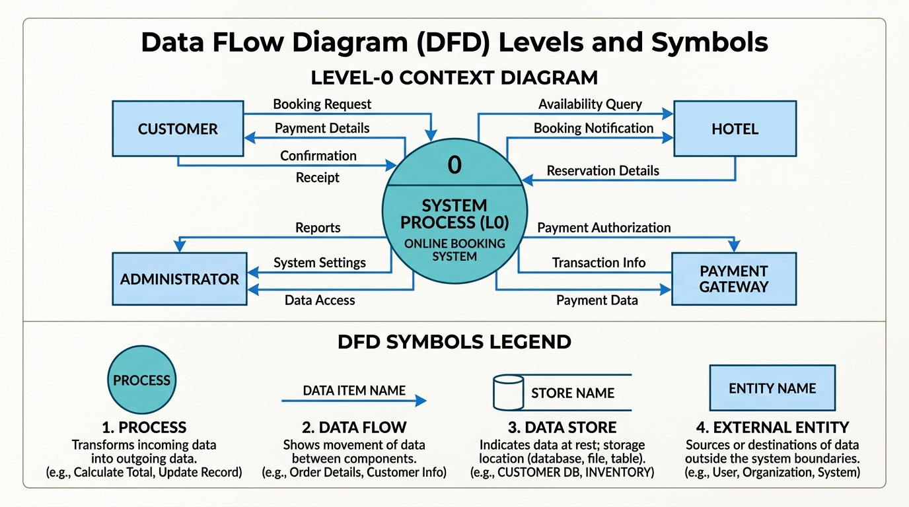

IBPS SO IT Officer · Detailed Study Notes
3. Software Requirement Analysis
Comprehensive point-by-point descriptive notes on Requirement Engineering Process (Elicitation, Analysis, SRS, Validation), Functional vs Non-Functional Requirements, SRS IEEE 830 Format & Characteristics, Feasibility Study, and Analysis Tools (DFD Levels & Rules, Data Dictionary, ERD, Decision Tables/Trees).
-
Definition: Requirement Engineering is the systematic process of discovering, analyzing, documenting, and validating the services required from a system and the operational constraints under which it must operate.
-
The 4 Key Sequential Sub-Processes:
1. Requirements Elicitation (Gathering): Discovering requirements by interacting with domain experts, end-users, and business stakeholders.
2. Requirements Analysis & Negotiation: Sorting out requirement conflicts, eliminating ambiguities, evaluating feasibility, and negotiating trade-offs among stakeholders.
3. Requirements Specification: Formalizing analyzed requirements into an official contractual document—the SRS (Software Requirement Specification).
4. Requirements Validation: Reviewing and auditing the SRS document to ensure requirements are complete, consistent, realistic, and verifiable before design begins.
-
Requirements Elicitation Techniques (Exam Frequently Asked):
• Interviews 1-on-1 sessions (Structured or Unstructured) with stakeholders.
• JAD (Joint Application Development) Intensive structured workshop bringing users, analysts, and managers into a single room to resolve requirements rapidly.
• Brainstorming Group technique to generate innovative ideas and unearth unstated user needs.
• Questionnaires / Surveys Collecting feedback from a geographically distributed large user base.
• Ethnography / Observation Observing actual user workflow in their natural work environment to discover hidden implicit requirements.
• Prototyping Building mockups to elicit user feedback when requirements are unclear.
🔥 IBPS SO IT Exam Clue: If asked about "Intensive workshop technique bringing users and developers together to finalize requirements" → Answer is JAD (Joint Application Development). If asked about "Observing users in their real environment" → Answer is Ethnography.
-
3.2.1 Functional Requirements (FR):
• Statements of services the system must perform, describing inputs, outputs, computations, data manipulation, and reaction to specific operational inputs.
• Describes WHAT the system does.
• Examples: System must allow users to deposit funds; system shall compute monthly interest at 5%; system must generate a PDF transaction receipt after payment.
-
3.2.2 Non-Functional Requirements (NFR):
• Constraints or quality benchmarks imposed on the system or development process.
• Describes HOW WELL the system performs its functions (Quality Attributes).
• Examples: Response time must be under 2 seconds; System uptime must be 99.99%; Passwords must be hashed using SHA-256.
-
Classification of Non-Functional Requirements:
• Product Requirements: Performance (speed, throughput), Reliability (MTBF), Security, Usability, Availability, Portability.
• Organizational Requirements: Process standards (ISO compliance), implementation language restrictions (e.g., Java only), delivery environment.
• External Requirements: Regulatory/legal standards (GDPR compliance, Banking Reserve ratio guidelines), Interoperability rules.
| Attribute |
Functional Requirement (FR) |
Non-Functional Requirement (NFR) |
| Primary Focus |
What the system MUST DO (System functionality) |
How well the system PERFORMS (Quality constraints) |
| Scope |
Specific user tasks or individual feature modules |
System-wide architecture and operational environment |
| Examples |
"System shall calculate tax based on income slab" |
"System shall process 10,000 transactions/sec" |
| Failure Consequence |
Specific feature doesn't work |
Whole system becomes unusable or unscalable |
-
Definition: The formal, complete, official document that serves as a binding contract between the software customer and the development organization.
📜 3.3.1 SRS Format / Structure (IEEE 830 Standard)
- Section 1: Introduction: Purpose, Scope, Definitions, Acronyms, References, Overview.
- Section 2: Overall Description: Product Perspective, Product Functions, User Characteristics, General Constraints, Assumptions & Dependencies.
- Section 3: Specific Requirements: External Interfaces (User, Hardware, Software, Communication), Functional Requirements, Performance Requirements, Logical Database Requirements, Design Constraints, Software System Attributes (Reliability, Security, Maintainability).
⭐ 3.3.2 Characteristics of a Good SRS (High-Yield Exam Focus)
- 1. Correct: Every requirement stated in SRS is one that the final software shall actually meet.
- 2. Unambiguous: Every requirement has only one single interpretation (avoid vague words like "user-friendly", "fast", "optimal").
- 3. Complete: Includes all significant requirements, responses to invalid inputs, and full labels on diagrams.
- 4. Consistent: No requirement conflicts with another (e.g., "Report generated in 2 seconds" vs "Report requires 10 seconds processing").
- 5. Verifiable (Testable): There exists a finite, cost-effective automated or manual test process to verify that the software meets the requirement.
- 6. Modifiable: Structure and organization allow changes to be made easily, completely, and consistently without ruining formatting.
- 7. Traceable: Origin of each requirement is clear, and each requirement facilitates referencing in future SDLC deliverables:
• Forward Traceability: Requirement → Design → Code → Test Case.
• Backward Traceability: Test Case / Code → Original SRS Requirement.
🔥 IBPS SO IT Exam Clue: If asked "Which characteristic ensures every requirement has only ONE interpretation?" → Answer is Unambiguous. If asked "Which characteristic allows tracing requirement to test cases?" → Answer is Traceable.

Figure 3.1: SRS Requirement Traceability (Forward Traceability vs Backward Traceability)
-
Definition: A high-level, preliminary study conducted before requirements engineering to determine whether a proposed software project is practical, viable, and worth investing in.
| Feasibility Dimension |
Core Evaluation Question |
Key Considerations |
| 1. Technical Feasibility |
Can we build this system with existing technology? |
Available hardware, software tools, team expertise, risk of technical failure |
| 2. Economic Feasibility |
Do benefits justify project cost? (Cost-Benefit Analysis) |
ROI (Return on Investment), development cost vs financial gains, payback period |
| 3. Operational Feasibility |
Will the end-users actually accept and use the system? |
User workflow impact, resistance to organizational change, training needed |
| 4. Legal / Ethical Feasibility |
Does the system comply with laws & regulations? |
Copyrights, data privacy (GDPR), licensing terms, regulatory compliance |
| 5. Schedule Feasibility |
Can the system be completed within target deadline? |
Resource availability, market timing, realistic milestone timelines |
📊 3.5.1 Data Flow Diagram (DFD)
-
Concept: Graphical modeling tool showing the flow of data through an information system, data transformations, and storage locations. Focuses strictly on **Data Flow**, NOT Control Flow (no decision logic, loops, or execution order!).
-
4 Standard DFD Symbols (Yourdon & DeMarco Notation):
1. Process (Circle / Rounded Rectangle) Transforms input data into output data.
2. Data Flow (Arrow) Represents path of data movement.
3. Data Store (Open Box / Parallel Lines) Database or file repository where data rests.
4. External Entity / Source-Sink (Rectangle) External person, system, or organization supplying or receiving data.
-
DFD Hierarchy & Levels:
• Level-0 DFD (Context Diagram): Highest-level abstraction representing the entire system as a single process circle connected to external entities.
• Level-1 DFD: Explodes Level-0 process into major sub-processes, primary data stores, and data flows.
• Level-2 DFD: Decomposes a specific Level-1 sub-process into detailed sub-modules.
-
Strict DFD Rules (Exam Favorite):
• Data CANNOT flow directly from one Data Store to another Data Store without passing through a Process!
• Data CANNOT flow directly from an External Entity to another External Entity without passing through a Process!
• Data CANNOT flow directly from an External Entity to a Data Store without passing through a Process!

Figure 3.2: Data Flow Diagram (DFD) Level-0 Context Diagram & 4 Core Symbols Legend
📕 3.5.2 Data Dictionary
-
Concept: A centralized reference repository containing structured metadata definitions for all data elements, data structures, data stores, and processes appearing in DFDs.
-
Data Dictionary Notation / Symbols:
• = : Is composed of / Equivalent to
• + : And (Sequence)
• [ | ] : Selection / Choice (Choose one alternative)
• { } : Iteration / Loop (Repeated data element)
• ( ) : Optional data element
🗄️ 3.5.3 Entity-Relationship Diagram (ERD)
-
Concept: Conceptual database modeling tool representing real-world entities, attributes, and relationships.
• Entity (Rectangle): Real-world object (e.g., Student, Account).
• Attribute (Ellipse): Property of entity (e.g., Student_ID, Name).
• Relationship (Diamond): Association between entities (1:1, 1:N, N:M).
🌳 3.5.4 Decision Tables & Decision Trees
-
Concept: Tools for modeling complex conditional business rules.
• Decision Table: Grid with 4 Quadrants: Condition Stub (list of conditions), Condition Entry (Y/N combinations), Action Stub (list of actions), Action Entry (X for actions taken).
• Decision Tree: Graphical tree representation where internal nodes represent conditions, branches represent outcomes, and leaf nodes represent final actions.
🔥 Section 3 Master Recap:
• 4 Process Steps: Elicitation → Analysis → Specification (SRS) → Validation.
• JAD & Ethnography: Workshop technique vs Real-world user observation.
• FR vs NFR: Functional = What system does; Non-Functional = How well (Quality).
• SRS IEEE 830 Characteristics: Correct, Unambiguous (1 meaning), Complete, Consistent, Verifiable, Modifiable, Traceable.
• DFD Level-0: Context diagram (single process circle).
• DFD Rule: Data Stores & External Entities CANNOT communicate without passing through a Process!
• Data Dictionary Notation: = (composed of), + (and), [|] (selection), {} (iteration), () (optional).